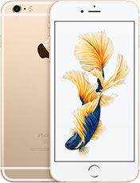

Değişen tek şey, her şey.
iPhone 6s’i kullandığınızda, onun çok farklı bir şey olduğunu hissedeceksiniz. 3D Touch, tek bir bastırma hareketiyle her zamankinden daha fazlasını yapmanızı sağlıyor. Live Photos, anılarınıza son derece canlı bir şekilde hayat veriyor. Ve bu sadece bir başlangıç. iPhone 6s’i daha ayrıntılı olarak incelediğinizde, onun her zerresinde inovasyon olduğunu göreceksiniz.
iPhone 6s’i kullandığınızda, onun çok farklı bir şey olduğunu hissedeceksiniz. 3D Touch, tek bir bastırma hareketiyle her zamankinden daha fazlasını yapmanızı sağlıyor. Live Photos, anılarınıza son derece canlı bir şekilde hayat veriyor. Ve bu sadece bir başlangıç. iPhone 6s’i daha ayrıntılı olarak incelediğinizde, onun her zerresinde inovasyon olduğunu göreceksiniz.
3D Touch
Multi-Touch şimdi daha da gelişti.
Ekrana uygulanan basıncı algılayarak, daha hızlı işlem yapmanıza yardımcı oluyor. Peek ve Pop hareketleri ile içeriklerin ön izlemesini görebilir (Peek hareketi), işlem yapabilirsiniz (Pop hareketi). Touch ID, parmak izinizi kullanarak telefonunuzun kilidini açmanızı imkan tanıyor.
iPhone 6s'in 12 megapiksel kamerası ile net ve canlı görüntüler elde edebilirsiniz. 5 megapiksel FaceTime HD kamerası ile selfi çekebilirsiniz. HD videodan 4 kat yüksek çözünürlükte videolar kaydediyor (4K video).
Multi-Touch şimdi daha da gelişti.
Ekrana uygulanan basıncı algılayarak, daha hızlı işlem yapmanıza yardımcı oluyor. Peek ve Pop hareketleri ile içeriklerin ön izlemesini görebilir (Peek hareketi), işlem yapabilirsiniz (Pop hareketi). Touch ID, parmak izinizi kullanarak telefonunuzun kilidini açmanızı imkan tanıyor.
iPhone 6s'in 12 megapiksel kamerası ile net ve canlı görüntüler elde edebilirsiniz. 5 megapiksel FaceTime HD kamerası ile selfi çekebilirsiniz. HD videodan 4 kat yüksek çözünürlükte videolar kaydediyor (4K video).
- Silver
- Gold
- Rose Gold
- Space Grey

- 


- 16GB
64GB
128GB - 16GB
64GB
128GB - 16GB
64GB
128GB - 16GB
64GB
128GB
- Telif Hakkı © 2021 Apple Inc. Tüm hakları saklıdır.
- Gizlilik Politikası
- Kullanım Şartları
- Satış ve Para İadesi
- Site Haritası